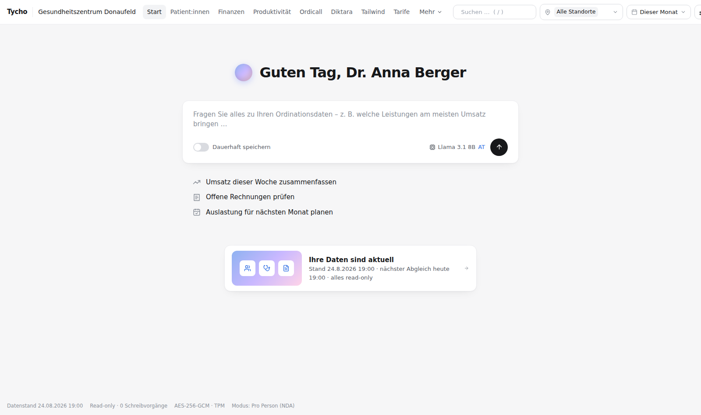
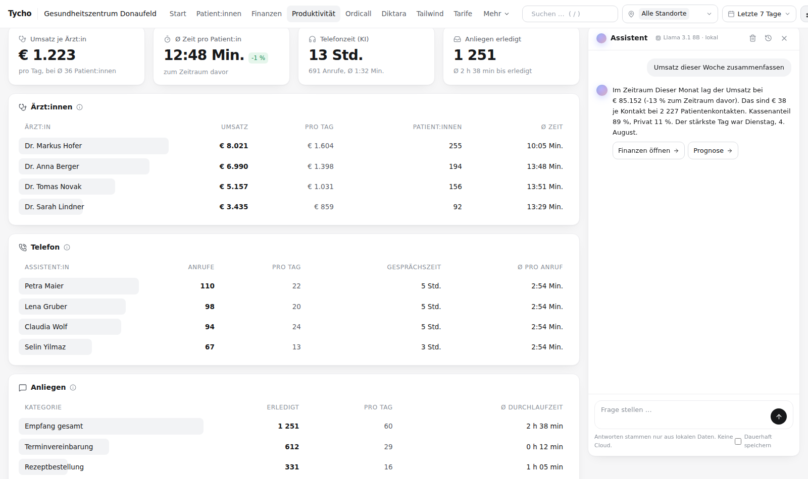

Was das Quartal bringt, sagt Ihnen die Kasse Monate später. Bis dahin lässt sich nichts mehr ändern.
Tycho · für Ordinationen, Gruppenpraxen und Primärversorgungszentren
Wissen, wie die Ordination läuft.Bevor der Bescheid kommt.
Tycho liest Praxisprogramm, Telefon-KI, Dokumentation und Dienstplan zusammen und sagt Ihnen jeden Montag, wo Sie stehen. Auf Ihrem Server, nur lesend, ohne Internet.
Lokale KINur lesendOhne InternetVerschlüsseltMontagsbericht
Die Ausgangslage/01
Ihre Ordination erzeugt jeden Tag
Daten, die niemand zusammenführt.
Das Praxisverwaltungssystem weiß, welche Leistungen erbracht wurden. Die Telefon-KI weiß, wie viele Anrufe nie zu einem Termin wurden. Die Dokumentations-KI weiß, wie lange ein Arztbrief liegen bleibt. Jedes System für sich ist blind für das, was die anderen wissen.
Erbracht, dokumentiert, nicht verrechnet. Ohne Abgleich über alle Systeme fällt das niemandem auf.
Fünf Auswertungen aus fünf Programmen ergeben noch kein Bild davon, wie die Ordination wirklich läuft.
Wer selbst exportiert und in der Tabellenkalkulation rechnet, tut das einmal im Quartal. Nicht jeden Montag.
Was Tycho zeigt/02
Vier Antworten, die eine
Ordinationsleitung wirklich braucht.
Alles aus Ihren eigenen Daten, berechnet in der Nacht, fertig, wenn Sie morgens aufsperren.
Tycho Station
Wie läuft es gerade?
Efficacy Score der Ordination, Kontakte, Umsatz, Telemedizinanteil, Ausfallquote, Wartezeit, Anrufe, gesparte Dokuzeit und offene Punkte. Eine Leiste, die sich nach Rolle, Kostenträger, Team und Zeitraum filtern lässt.
Station ansehen
Kreuzprüfung
Was blieb liegen?
Tycho vergleicht das Leistungsblatt mit Kartei, Terminen, erkannten Leistungen aus der Dokumentation und e-card Konsultationen. Was erbracht, aber nicht verrechnet wurde, steht als Liste da, mit Betrag und Begründung.
Kreuzprüfung ansehen
Prognose
Wo stehen wir am Quartalsende?
Hochrechnung von Honorar, Scheinzahl und Fallwert mit Konfidenzband, aufgeteilt nach Kostenträger, mit Vergleich zum Vorquartal. Dazu Szenarien: was passiert, wenn die Ausfallquote sinkt oder ein Tag mehr besetzt ist.
Prognose ansehen
Digest
Was muss ich diese Woche wissen?
Montag um sechs liegt ein Bericht im Postfach: die wichtigsten Kennzahlen, was sich verändert hat und woran das lag, in ganzen Sätzen. Signiert und verschlüsselt versendet, ohne dass ein Programm geöffnet werden muss.
Digest ansehenGebaut im eigenen Gesundheitszentrum, nicht am Reißbrett
Erster Adapter CGM MedXPert
Telefon-KI ordicall
Dokumentations-KI diktara
Dienstplan Planery
Verzeichnis Active Directory
Honorarkatalog nach ÖGK-Honorarordnung
Weitere Systeme auf Anfrage geprüft
Live-Vorschau/03
So sieht ein Monat
in Ihrer Ordination aus.
Ein Ausschnitt der Tycho Station mit Beispieldaten einer Gruppenpraxis. Wechseln Sie den Zeitraum, die Zahlen rechnen sich neu.
Patientenkontakte je Tag01.09. bis 30.09.
Tycho-Einschätzung
Der Monat liegt 2,8 Prozent über dem Vergleichszeitraum. Getragen wird das von der Telemedizin, die Ausfallquote ist stabil.
Datenstand gestern 19:00Nur lesend · 0 SchreibvorgängeAES-256-GCM · TPM
Beispieldaten einer fiktiven Gruppenpraxis. In Ihrer Ordination stehen hier Ihre eigenen Zahlen.
Lokale KI/04
Tycho ist eine KI, die nur zuhört. Sie läuft auf Ihrem Server, schreibt nirgends hinein und hat keinen Draht nach draußen.
Kein InternetKein Update-ServerKeine TelemetrieKein Schreibrecht
Abgekapselt/05
Was draußen ist,
bleibt draußen.
Die Firewall am Server lässt keine Verbindung hinaus. Drinnen liest Tycho von einer Kopie, rechnet, verschlüsselt und antwortet. Auch der Assistent, ein Sprachmodell auf Ihrem Server, kennt nur diesen Raum.
lesende Verbindung, nur nach innenVerbindungsversuch, abgewiesen
So funktioniert Tycho/06
Jede Nacht ein Durchlauf.
Am Morgen ein Bild.
Kein Bediener, kein Export, keine Tabellenkalkulation. Um 19 Uhr entsteht die Kopie, um fünf rechnet Tycho, um sechs steht der neue Stand. Klicken Sie einen Schritt an, das Diagramm zeigt ihn.
aktiver SchrittDatenfluss
Um 19 Uhr entsteht eine Kopie der Datenbank. Um 05:10 liest Tycho daraus, mit einem Zugang, der nur lesen kann. Von ordicall und diktara kommen Kennzahlen, kein Ton, kein Text.
Aus Fällen werden Pseudonyme, aus Einzelposten Summen je Tag, Rolle, Position und Kostenträger. Namen und Diagnosen kommen gar nicht erst herein.
Leistungsblatt, Diktate und Anrufe werden gegeneinander gehalten. Was erbracht, aber nicht verrechnet wurde, steht auf der Liste. Das Quartal wird bis zum Ende gerechnet.
Das Ergebnis liegt verschlüsselt auf dem Server, der Schlüssel im Sicherheitschip. Die Kopie wird gelöscht. Jeder Schritt steht im Protokoll.
Die Station zeigt den Stand von gestern. Wer lieber fragt, fragt den Assistenten: „Welche Honorarnoten sind offen?“ Die Antwort kommt vom Server, nicht aus der Cloud.
Der Bericht liegt im Postfach: Score, Prognose, was liegen blieb, welche Fristen anstehen. In ganzen Sätzen, signiert, ohne dass jemand ein Programm öffnet.
Die vier Regeln/07
Ein Auswertungssystem darf
den Betrieb nicht gefährden.
Tycho ist als Kontrollinstanz gebaut, nicht als weiteres Programm im Behandlungsablauf. Vier Regeln stehen darüber, und jede ist technisch erzwungen, nicht nur versprochen.
Tycho schreibt nie in eine Datenbank. Eigener Leselogin ohne Schreibrechte, Verbindung mit Lesevermerk, Zugriff auf eine Kopie statt auf das laufende System. Ein Testlauf versucht jede Nacht einen Schreibvorgang. Er muss scheitern, sonst schlägt Tycho Alarm.
Während der Ordinationszeit rührt Tycho die Produktivdatenbank nicht an. Gearbeitet wird nach Betriebsschluss auf einer Momentaufnahme. Keine Erweiterung im Praxisprogramm, kein Dienst auf den Arbeitsplätzen, keine spürbare Last.
Tycho hat dieselben Leserechte wie eine Person, die Auswertungen macht. Nicht mehr. Anmeldung über das Windows-Konto, Berechtigung über eine Gruppe im Verzeichnisdienst, Dienstkonto mit automatisch wechselndem Passwort.
Der Datenspeicher ist mit AES-256-GCM verschlüsselt, der Hauptschlüssel liegt im Sicherheitschip des Servers und lässt sich nicht herauskopieren. Keine Cloud, keine Telemetrie, keine ausgehende Verbindung. Jeder Zugriff steht in einem verketteten Protokoll.
Die Lücke/08
Kein Auswertungssystem am Markt verbindet Telefon und Dokumentation mit dem Praxisverwaltungssystem. Genau dort entsteht das vollständige Bild.
PVSTelefon-KIDokumentations-KIAufrufsystemDienstplan
Die Quellen/09
Tycho bringt mit, was
Sie ohnehin schon haben.
Nichts muss neu erfasst werden. Tycho liest aus den Systemen, die in Ihrer Ordination bereits laufen, und bringt sie auf einen gemeinsamen Nenner.
Nächtliche Momentaufnahme mit reinem Leserecht. Adapter für die gängigen österreichischen Systeme, Cloudsysteme über ihren Export.
Aus ordicall: wie viele Anrufe die KI erledigt hat, was übergeben wurde, was außerhalb der Öffnungszeiten kam, wie viele Terminwünsche nie zu einem Termin wurden.
Aus diktara nur Metadaten: Dauer, Nutzungsgrad, erkannte Leistungscodes. Keine Transkripte, keine Befundtexte, kein Ton.
Die Zeitstempel, an denen sich Unzufriedenheit ablesen lässt, je Behandler und Tageszeit, als Median und als oberes Fünftel.
Der Personalstamm kommt aus Active Directory. Damit stimmen Rollen, Rechte und Auswertungen überein, ohne zweite Liste.
Optional: Zeiten und Abwesenheiten aus dem Dienstplan, Zahlungseingänge aus dem Kontoauszug für die Honorarnoten. Beides nur lesend.
Die Oberfläche/10
Eine Ansicht, die
niemand erklären muss.
Oben die Bereiche als Text, rechts Standort und Zeitraum, in der Mitte die Zahlen. Wer eine Ordination führen kann, kann auch Tycho bedienen. Wahlweise hell oder dunkel.


Dazu ein Assistent, der Fragen in ganzen Sätzen beantwortet: welche Leistung den meisten Umsatz bringt, welche Honorarnoten offen sind, wie die Auslastung im nächsten Monat aussieht. Das Sprachmodell läuft auf Ihrem Server. Es geht keine Frage und keine Zahl nach außen.
Wohin es geht/11
Vom eigenen Zentrum
in andere Ordinationen.
Tycho läuft zuerst dort, wo es entstanden ist. Was sich bei uns bewährt, kommt Schritt für Schritt zu Ihnen.
Die Plattform mit beiden Ansichten, dem lokalen Assistenten und dem Honorarkatalog. Anforderungen an diktara, ordicall und Planery liegen bei den Herstellern.
erledigtCGM MedXPert auf Kopie, Schreib-Selbsttest, Anmeldung mit dem Windows-Konto, die ersten Montagsberichte.
in ArbeitPlanery angebunden, Zahlungseingänge aus dem Kontoauszug, Erinnerungen und Ratenzahlung als Vorschlag. Vorlagen für Datenschutz-Folgenabschätzung und Betriebsvereinbarung.
geplantAdapter für die nächsten Systeme, Standortvergleich innerhalb eines Trägers, Wahlarzt-Ausgabe mit WAHonline.
geplantSicherheitsaudit durch Dritte, Unterlagen für Ärztezentren und Träger, Sprachdiktat für den Assistenten, lokal.
ZielZum Nachlesen/12
Alles Wesentliche
auf zehn Seiten.
Was Tycho liest, was es speichert und was es nie tut. Für Ordinationsleitung, IT-Betreuung und Datenschutz, ohne Marketingsprache.
Nächster Schritt
Suchen Sie sich einen Termin aus.
30 Minuten per Video, ohne Verkaufsdruck. Wir zeigen Tycho an Beispieldaten, klären, welches Praxisprogramm bei Ihnen läuft, und sagen offen, was geht und was nicht.